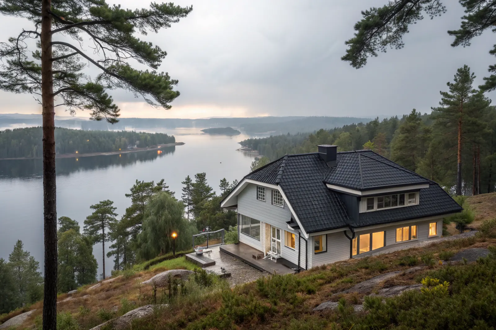

Takbyte i Botkyrka
Byte av tegel-, betong- och plåttak.
Takbyte i Botkyrka →Botkyrka sydväst om Stockholm har stora villaområden i Tullinge, Tumba och Grödinge och radhusområden från 1960–80-talet. Vi är takläggare i Botkyrka för villor, radhus och samfälligheter.
Tullinge vid Tullingesjön har villor från tidigt 1900-tal och framåt, i kuperad, skogsklädd terräng. Tumba har växt kring Tumba bruk och järnvägen, med villor och radhus från framför allt 1960–80-talet.
Grödinge och Vårsta har en mer lantlig karaktär med villor, gårdar och fritidshus nära sjöar och skog. I norra Botkyrka, kring Alby, Hallunda och Fittja, dominerar flerbostadshus, men även där finns radhus och småhus.
Variationen gör att takarbetet i Botkyrka spänner från varsam omläggning av äldre villatak i Tullinge till byte av hela radhuslängor i Tumba.
Oavsett om du behöver ett komplett takbyte eller en riktad renovering ger vi en tydlig bedömning och offert. Vi arbetar även i grannområden – se alla områden vi arbetar i.

Tullinges äldre villor har ofta branta tak med tegel eller plåt som lagts om tidigare, där underlaget nu åter är slut. Skuggiga lägen under tallar ger mossa på pannorna och barr i rännorna, och stora takytor mot sjön får mer vind.
I radhus- och villaområdena från 1960–80-talet är betongpannor och papp vanligast. Vi ser ofta spruckna takfotsplåtar, läckande genomföringar och bristande ventilation där vindar tilläggsisolerats.
Bygglov hanteras av Botkyrka kommun. Byte till samma material och kulör kräver normalt inget lov. Vill du byta material eller ändra takets form, eller ligger huset i en kulturmiljö, bör du stämma av med kommunen innan arbetet planeras.
I samfälligheter är det bra att börja med en gemensam besiktning av alla tak. Då kan ni prioritera vilka längor som ska göras först och fördela kostnaderna över tid.
Byte av tegel-, betong- och plåttak.
Takbyte i Botkyrka →Riktade åtgärder som förlänger takets liv.
Takrenovering i Botkyrka →Bedömning av skick inför beslut.
Takbesiktning i Botkyrka →Nytt ytskydd på plåttak.
Takmålning i Botkyrka →Skonsam tvätt och mossbehandling.
Taktvätt i Botkyrka →Nytt plåttak och plåtarbeten.
Plåttak i Botkyrka →Vi utgår från Bromma (Mariehäll) och når Botkyrka via E4/E20 söderut. Vi bokar besiktning och följer projektet tills taket är klart.
Läs mer om tak på villa eller jämför takbyte och takrenovering innan du bestämmer dig.
Vi arbetar även i Huddinge.
Takläggare i Huddinge →Vi arbetar även i Skärholmen.
Takläggare i Skärholmen →Vi arbetar även i Hägersten.
Takläggare i Hägersten →